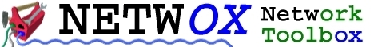

Learning how to use netwox
A short user manual describes syntax.
Real world examples are available.
A detailed help describes each tool.
A paper presents how to use netwox to test a router or a firewall.
A paper presents how to use netwox to test an IPv6 firewall.
Tutorials
If you do not understand some points, read network tutorials (this page contains links to documentation not written by me).
Miscellaneous text files
Following files are a copy of files included in ".tgz". Please
ignore references to local path (for example ./doc/probleminstallunix.txt).
presentation
installation of netwox-5.39.0-src.tgz under Unix
installation of netwox-5.39.0-src.tgz under Windows
installation of netwox-5.39.0-bin_windows.tgz
problems which might happen during installation of netwox-5.39.0-src.tgz under Unix
problems which might happen during installation of netwox-5.39.0-src.tgz under Windows
problems which might happen during installation of netwox-5.39.0-bin_windows.tgz
how to add one tool in netwox under Unix
how to add one tool in netwox under Windows
problems which might happen during usage under Unix
problems which might happen during usage under Windows
list of unimplemented features
how to report a new problem
Availability
Toolbox netwox is available at :
http://ntwox.sourceforge.net/